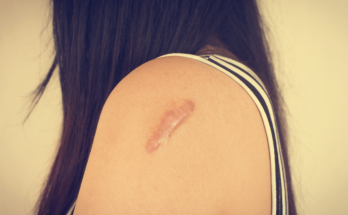
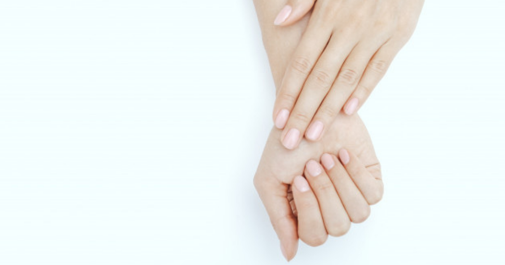

|
|
လေ့ကျင့်ခန်း မလုပ်ဘဲ ဗိုက်ချပ်အောင် ဘာလုပ်ကြမလဲခေါင်းစဉ်ဖတ်ရုံနဲ့တင် အားလုံးစိတ်ဝင်စားသွားမယ်ထင်ပါတယ်။ ဟုတ်ကဲ့ ဗိုက်ခေါက်ထူခြင်းက လူတွေ ကိုယ့ကိုယ်ကို ယုံကြည်ချက်ကျခြင်းရဲ့အကြောင်းအရင်းတစ်ခုလည်း ဖြစ်ပါတယ် ။ အထူးသဖြင့်အမျိုးသမီးတွေမှာပါ။ ဒါ့ကြောင် ကမ္ဘာတစ်ဝှမ်းမှာ အဆီချလေ့ကျင့်ခန်းတွေ ခေတ်စားတယ်ဆိုတာလည်း အများအသိဘဲ ဖြစ်ပါတယ်။ ဒီဆောင်းပါးမှ ဖော်ပြထားတဲ့ အကြောင်းအရာတွေကတော့ လေ့ကျင့်ခန်းလုပ်တာလောက်တော့ မထိရောက်စေနိုင်ပေမဲ့လည်း သင့် ဗိုက်အဆီကျိဖို့အတွက် အကျိုးရှိစေမှာပါ။၁။ Probiotic ( ပရိုဘိုင်အိုတစ် ) မှီဝဲပါအူလမ်းကြောင်းမှာ ခန္ဓာကိုယ်အတွက် ကောင်းစေတဲ့ ဘက်တီးရီးယားပိုးတွေ ရှိပါတယ်။ ခန္ဓာကိုယ်အတွက်မကောင်းတဲ့ရောဂါပိုးတွေကို တိုက်ဖျက်နိုင်တဲ့ ပိုးကောင်းတွေပါ။ |

|
ဦးရေပြားပေါ်က ဝက်ခြံပြဿနာဝက်ခြံဆိုတာ ခန္ဓာကိုယ်နေရာအနှံ့ ပေါက်နိုင်ပါတယ်။ ဦးရေပြားမှာလည်း ဝက်ခြံဖုပေါက်တာ ကြုံဖူးကြမှာပါ။ ဒါကြောင့် ဦးရေပြားမှာ ဝက်ခြံပေါက်ရတဲ့အကြောင်းရင်းနဲ့ ပေါက်လာရင် ဘယ်လိုဖြေရှင်းရမလဲဆိုတာ ရေးသားဖော်ပြပေးလိုက်ပါတယ်။ဦးရေပြားမှာ ဘာလို့ ဝက်ခြံ ပေါက်ရတာလဲဦးရေပြားက ဝက်ခြံတွေကို ဆံပင်ပေါက်ရာ ဆံပင်စပ်တစ်လျှောက်မှာ အတွေ့ရ များပါတယ်။ သေးငယ်ယားယံတဲ့ ဝက်ခြံဖုလေးတွေအပြင် အနာဖြစ်ပြီး အက်ကွဲရာပါ တွေ့ရတတ်ပါတယ်။ ပြင်းထန်တယ်ဆိုရင်တော့ အမဲရောင်အက်ကွဲရာဖြစ်ပြီး အမာရွတ် ကျန်နေခဲ့တတ်ပါတယ်။ |
လေ့ကျင့်ခန်းလုပ်ရမှာ ပျင်းနေသူတွေအတွက် နည်းလမ်းကောင်းများလေ့ကျင့်ခန်းလည်း လုပ်ရမှာ ပျင်းတယ်။ Gym လည်း မသွားချင်ဘူး။ ချွေးထွက်တာလည်း မကြိုက်ဘူး။ ကျန်းမာတာတော့ ကျန်းမာချင်တယ်။ ဒါဆိုရင်တော့ အောက်က ရိုးရှင်းတဲ့ နည်းလမ်းတွေ စလုပ်ကြည့်ရအောင်။လှုပ်လှုပ်ရှားရှားနေဖို့ ဘာဖြစ်လို့ လိုအပ်တာလဲလေ့ကျင့်ခန်း တစ်ခါမှ မလုပ်ဖူးဘူး။ ဒါမှမဟုတ် လေ့ကျင့်ခန်းလုပ်ပြီး ရတဲ့ ဖီလင်မျိုး တစ်ခါမှ မခံစားဖူးဘူး ဆိုရင် သင်ဟာ လေ့ကျင့်ခန်းလုပ်တဲ့ နည်းမှန်လမ်းမှန်ကို မတွေ့သေးလို့ပါ။ အရင်ဆုံး လေ့ကျင့်ခန်းကို လေ့ကျင့်ခန်းလို့ မမြင်ဘဲ သာမန် ကိုယ်လက်လှုပ်ရှားမှုလို့ မြင်ကြည့်သင့်ပါတယ်။ လေ့လာချက်တွေအရ အထိုင်များခြင်းက နှလုံးရောဂါ၊ ဆီးချိုရောဂါ၊ လေဖြတ်တာနဲ့ သတိမေ့လွယ်တာတွေကို ဖြစ်စေပါတယ်။ ဒါကြောင့် လေ့ကျင့်ခန်းတစ်ခုခုလုပ်ဖို့တော့ လိုနေပါပြီ။ |
အသက် ၄၀ ကျော်လာတဲ့အခါ ဘာကြောင့်ဝိတ်ချဖို့ ခက်သွားတာလဲအမျိုးသမီးအများစုဟာ အသက် ၄၀ ကျော်လာရင် ဖြစ်တတ်တာတွေကို တကယ် မသိကြပါဘူး။ တကယ် သိလာရင်တော့ ဒါဟာ အံသြရတဲ့ အခိုက်အတန့် ဖြစ်နေမှာပါ။ အသက်ကြီးလာတာနဲ့အမျှ ခန္ဓာကိုယ်မှာ အပြောင်းအလဲတွေ ဖြစ်လာပါတယ်။ တချို့ကတော့ အသက်ကြောင့်ဖြစ်ပြီး တချို့ကတော့ သွေးဆုံးကိုင်တာကြောင့် ဖြစ်ပါတယ်။ ဒီလို အကြောင်းတွေကြောင့်ပဲ ဝ ဝ လာတတ်ပါတယ်။ ဒီဆောင်းပါးမှာတော့ ၄၀ ကျော်လာတဲ့အခါ ခန္ဓာကိုယ်မှာ ဘာတွေဖြစ်လာလဲဆိုတာရယ်၊ ဘယ်လိုလုပ်ရင် ကျန်းကျန်းမာမာ နေနိုင်မလဲဆိုတာရယ်ကို စနစ်တကျရေးသားဖော်ပြထားပါတယ်။၁။ ဟော်မုန်းဓာတ်တွေ နည်းပါး ယုတ်လျော့လာတယ်အသက် ၄၀ အကျော်မှာ ခန္ဓာကိုယ် အပြောင်းအလဲအတွက် အဓိက တာဝန်ရှိတာကတော့ ဟော်မုန်းတွေပါ။ ဟော်မုန်းဆိုတာ ခန္ဓာကိုယ်ရဲ့လုပ်ငန်းဆောင်တာတော်တော်များများကို ထိန်းချုပ်ထားတဲ့ ဓာတုပစ္စည်းတွေ ဖြစ်ပါတယ်။ |
ဗီတာမင် ဒီ ၏ ကျန်းမာရေး အကျိုးကျေးဇူးများခန္ဓာကိုယ်က နေရောင်နဲ့ ထိတွေ့တဲ့အခါ ဗီတာမင် ဒီ ကို ထုတ်လုပ်ပေးပါတယ်။ အခုခေတ်ကာလမှာ နေရောင်ခြည်ကြောင့်ဖြစ်တဲ့ အရေပြားကင်ဆာကို ကြောက်တာကြောင့် နေရောင်ကာပစ္စည်းတွေကို သုံးလာကြပါတယ်။ အဲ့ဒီလိုသုံးတာကလည်း ခန္ဓာကိုယ်ရဲ့ ဗီတာမင် ဒီ ထုတ်လုပ်မှုကို ကျဆင်းစေပါတယ်။ ဒီတော့ တစ်နေ့ကို ၁၅ မိနစ်လောက်တော့ နေရောင်ကာမသုံးဘဲ နေသင့်ပါတယ်။ နောက်ပြီး နေရောင်အကူအညီနဲ့ ခန္ဓာကိုယ်က ထုတ်လုပ်ပေးတာအပြင် ဗီတာမင် ဒီ ကို နွားနို့နဲ့ နို့ထွက်ပစ္စည်းတွေကလည်းရရှိနိုင်ပါတယ်။ဗီတာမင် ဒီ ဟာ ခန္ဓာကိုယ်အတွက် အလွန်ကို အကျိုးကျေးဇူးများတဲ့ ဗီတာမင် တစ်မျိုး ဖြစ်ပါတယ်။ ဒါကြောင့် ဘယ်လို စိတ်ဝင်းစားစရာကောင်းတဲ့ အချက်တွေရှိလဲဆိုတာ လေ့လာကြည့်ရအောင်ပါ။ ကို်ယ်ဝန်ဆောင်ကာလမှာ မိခင်နဲ့ ရင်သွေးကို ကျန်းမာစေတယ် |
|  | ရေယုန်လား၊ အနီဖုပေါက်တာလားအရေပြားဆိုတာ ခန္ဓာကိုယ်ရဲ့ အကြီးဆုံးအစိတ်အပိုင်းပါ။ အရေပြားပေါ်မှာ အနီဖုလေးတွေ ပေါက်လာတဲ့အခါမှာ နာလည်းနာလာပြီဆိုရင် လူတိုင်း သတိထားမိတတ်ကြပါတယ်။ ရေယုန်လား ဒါမှမဟုတ် တခြားရောဂါကြောင့် အနီဖုပေါက်တာလားဆိုပြီး စိုးရိမ်တတ်ကြပါတယ်။ ဒါကြောင့် ရေယုန်လား တခြားရောဂါကြောင့် အနီဖုပေါက်တာလား ခွဲခြားနိုင်အောင် ကွာခြားချက်လေးတွေကို လေ့လာကြည့်ရအောင်။ရေယုန်ဆိုတာ (Herpes)ရေယုန်ဆိုတာ ပါးစပ်နဲ့ နှုတ်ခမ်းပတ်ဝန်းကျင် ဒါမှမဟုတ် လိင်အင်္ဂါနားမှာ ပေါက်တတ်တဲ့ အရည်ကြည်အဖုလေးတွေ ဖြစ်ပါတယ်။ အရည်ကြည်ကနေ ပေါက်သွားတဲ့အခါ အရေပြားအက်ကွဲရာလေး ဖြစ်သွားပါတယ်။ ရေယုန်က ဗိုင်းရပ်စ်ပိုးကြောင့် ဖြစ်ရတာပါ။ ရေယုန်ဖြစ်စေတဲ့ ဗိုင်းရပ်အမျိုးအစား နှစ်မျိုး ရှိပါတယ်။ |

|
ရေယုန်လား၊ ကြွက်နို့လားHerpes လို့ခေါ်တဲ့ ရေယုန်နဲ့ Human Papillomavirus (HPV) လို့ခေါ်တဲ့ ကြွက်နို့ရောဂါဟာ ဗိုင်းရပ်စ်ပိုးမွှားကြောင့် ဖြစ်ရတာပါ။ ရောဂါ နှစ်မျိုးလုံးက လိင်ဆက်ဆံရာကနေ ကူးစက်နိုင်ပါတယ်။ ရောဂါလက္ခဏာတွေဟာ ဆင်တူတာကြောင့် တချို့လူနာတွေဟာ ဘယ်ရောဂါဖြစ်လို့ ဖြစ်မှန်းမသိ စိုးရိမ်တတ်ကြပါတယ်။ကြွက်နို့နဲ့ ရေယုန် နှစ်ခုလုံးဟာ မျိုးပွားအင်္ဂါမှာ အနာဖြစ်စေနိုင်ပါတယ်။ ဒါ့အပြင် ရောဂါလက္ခဏာမပြဘဲလည်း ပုန်းအောင်းနေတတ်ပါတယ်။ ဒီ နှစ်မျိုးမှာ HPV ကြွက်နို့က ရေယုန်ထက် အဖြစ်များပါတယ်။ တကယ်တမ်း ပြောရရင် လိင်ပိုင်းဆိုင်ရာ အထိအတွေ့ရှိသူတွေ အားလုံးနီးပါးဟာ ဘဝမှာ အနည်းဆုံး တစ်ကြိမ်လောက်တော့ ကြွက်နို့ပေါက်ဖူးပါတယ်။ ဒါ့အပြင် မဖြစ်သေးရင်လည်း တစ်ချိန်ချိန်မှာတော့ ဗိုင်းရပ်စ်ပိုးဟာ ကူးစက် ပုန်းအောင်းနိုင်ပါတယ်။ ကြွက်နို့လား၊ ရေယုန်ဖြစ်တာလား သိရအောင် ကွဲပြားချက်လေးတွေကို ဖော်ပြပေးပါမယ်။ |

|
သင့်မျက်နှာက ဖော်ပြနေသောရောဂါများဆရာဝန်တစ်ယောက်က လူနာတစ်ဦးကို အကဲခတ်တဲ့အခါ သိသာတဲ့ရောဂါလက္ခဏာအပြင် မျက်နှာသွင်ပြင်ပေါ်က ရောဂါလက္ခဏာ အပြောင်းအလဲတွေကိုပါ ဖတ်ရှုတတ်ကြပါတယ်။ ဒီဆောင်းပါးမှာလည်း သင့် မျက်နှာပေါ်ကနေ ရှာဖွေတွေ့ရှိနို်င်တဲ့ ရောဂါတွေကို ဆွေးနွေးပေးသွားမှာပါ။ဘယ်လို လက္ခဏာတွေလဲဒီလက္ခဏာတွေက အများအားဖြင့် အဖြစ်များပြီး တွေ့ရတတ်တဲ့ ရောဂါတွေရဲ့လက္ခဏာတွေပဲ ဖြစ်ပါတယ်။ မတူခြားနားတာရှိရင်တော့ အရင်ဆုံး ဆရာဝန်နဲ့ တိုင်ပင်ပြီး လိုအပ်သလို ကုသမှုခံယူသင့်ပါတယ်။ |

|
ပျိုမေတို့ ဗိုက်ချပ်စေရန်အတွက်ဒီနေ့ ဆေးခန်းမှာ တွေ့ကြုံခဲ့ရတဲ့ အဖြစ်အပျက်လေးတစ်ခု..အသက် က ၂၀ ကျော်ကျော်၊ ဗိုက်အောင့်၊ မူးပြီးအန်သတဲ့။ လူကလည်းပျော့ခွေနေပြီး အားမရှိသယောင်။ အဲ့ဒါကြောင့် ဘာအကြောင်းရင်းများရှိသလဲလို့ မေးစမ်းကြည့်တဲ့အခါ… အဖြေကတော့ ဗိုက်ခေါက်တွေ ထွက်ပြီး ဝနေလို့ ပိန်သွားအောင် Gym ဆော့ပြီး အစားမစားပဲနေနေတယ်တဲ့။ ဒါပေမဲ့ ခုလိုသာ ဖြစ်တယ်၊ ဗိုက်ခေါက်ကတော့ ကျမသွားဘူးတဲ့လေ။ |

|
ဆယ်ကျော်သက်များအတွက် ကျန်းမာရေးညီညွတ်သည့် ကိုယ်အလေးချိန် လျှော့ချနည်းများကိုယ်အလေးချိန် လျှော့ချတာဟာ ဆယ်ကျော်သက်တွေ အပါအဝင် အသက်အရွယ်မရေး လုပ်ဆောင်သင့်တဲ့ အရာပါ။ကိုယ်အရပ်နဲ့ လိုက်ပြီး ကျန်းမာရေးနဲ့ ညီညွတ်မျှတမယ့် အလေးချိန်မျိုး ပိုင်ဆိုင်တာဟာ မိမိကိုယ်ကို တန်ဖိုးထား ယုံကြည်မှုကို မြင့်တတ်စေပါတယ်။ဒါပေမဲ့ ဆယ်ကျော်သက်အရွယ်ဟာ ကြီးထွားနေဆဲကာလဖြစ်တဲ့အတွက် ကိုယ်အလေးချိန် လျှော့ချရမှာ ကျန်းမာရေးနဲ့ ညီညွတ်တဲ့ ရေရှည်မှာ အကျိုး ဖြစ်ထွန်းမယ့် နည်းလမ်းမျိုးကို သုံးသင့်ပါတယ်။ ဒီတော့ ဘယ်လိုနည်းလမ်းတွေပါလိမ့်။ ကျန်းမာရေးနဲ့ ညီညွတ်ပြီး ဖြစ်နိုင်တဲ့ ရည်မှန်းချက်ပဲထားပါအဆီပိုတွေကို လျှော့ချတာကောင်းပေမဲ့ ကိုယ်ခန္ဓာကိုယ်ကို ဘယ်လိုဖြစ်ရမယ်ဆိုပြီး ရည်မှန်းချက်ထားတဲ့အခါမှာ ဖြစ်နိုင်တဲ့ ခန္ဓာကိုယ်ပုံစံမျိုးကိုပဲ ရည်မှန်းချက်ထားတာ ကောင်းပါတယ်။ |
|  | လက်သည်းခွံက ပြောပြနေတဲ့ သင့် ကျန်းမာရေးလက်သည်းပုံစံကိုကြည့်ပြီး သင့်ကျန်းမာရေး အခြေအနေကို သိနိုင်ပါတယ်တဲ့။ ယေဘုယျအားဖြင့်တော့ လက်သည်းပုံစံကို ကြည့်ပြီး အာဟာရချို့တဲ့တာကို သိနိုင်ပါတယ်။ ကြွတ်ဆတ်ပြီး ကွာကျမလိုဖြစ်နေတဲ့ လက်သည်းခွံကို တွေ့လိုက်ပြီဆိုရင် တခြားကျန်းမာရေး ပြသနာထက် အာဟာရချို့တဲ့တာက ပိုဖြစ်နိုင်ပါတယ်။လက်သည်းပုံစံကိုကြည့်ပြီး သင့်ကျန်းမာရေး အခြေအနေကို သိနိုင်ပါတယ်တဲ့။ ယေဘုယျအားဖြင့်တော့ လက်သည်းပုံစံကို ကြည့်ပြီး အာဟာရချို့တဲ့တာကို သိနိုင်ပါတယ်။ ကြွတ်ဆတ်ပြီး ကွာကျမလိုဖြစ်နေတဲ့ လက်သည်းခွံကို တွေ့လိုက်ပြီဆိုရင် တခြားကျန်းမာရေး ပြသနာထက် အာဟာရချို့တဲ့တာက ပိုဖြစ်နိုင်ပါတယ်။… လက်သည်းပုံစံကိုကြည့်ပြီး သင့်ကျန်းမာရေး အခြေအနေကို သိနိုင်ပါတယ်တဲ့။ ယေဘုယျအားဖြင့်တော့ လက်သည်းပုံစံကို ကြည့်ပြီး အာဟာရချို့တဲ့တာကို သိနိုင်ပါတယ်။ ကြွတ်ဆတ်ပြီး ကွာကျမလိုဖြစ်နေတဲ့ လက်သည်းခွံကို တွေ့လိုက်ပြီဆိုရင် တခြားကျန်းမာရေး ပြသနာထက် အာဟာရချို့တဲ့တာက ပိုဖြစ်နိုင်ပါတယ်။ လက်သည်းမကောင်းတာ သက်သက်ဆိုရင် လက်ချောင်းတစ်ချောင်း နှစ်ချောင်းမှာပဲဖြစ်တတ်ပြီး ဒါဟာ ကြီးကြီးမားမားပြဿနာ မဟုတ်ပါဘူး။ လက်သည်းက ပုံမှန်ဆိုရင် ချောမွေ့ပြီး အရောင်ပြောင်းခြင်း မရှိရပါဘူး။ ဒါပေမဲ့ တစ်ခုခုပြောင်းလဲနေပြီဆိုရင်တော့ ဘာဖြစ်တာလဲဆိုတာ အဖြေရှာရပါမယ်။ဘာကြောင့် လက်သည်းသားတွေ ပြောင်းလဲရတာလဲ၁။ ကြွတ်ဆတ်ခြင်းကြမ်းတမ်းပြီး မြောင်းထနေတဲ့လက်သည်းဟာ ကျိုးလွယ်ပြီး အတွေ့ရများဆုံး လက်သည်းပြဿနာပါ။ Onychoschizia လို့ခေါ်ပြီး အမျိုးသမီးတွေမှာ ပိုတွေ့ရပါတယ်။ လက်ခဏခဏ ရေစိုလိုက် ခြောက်လိုက်ကြောင့် ဖြစ်တာပါ။ ဒါကြောင့် ပန်းကန်ခဏခဏ ဆေးရတဲ့သူတွေဟာ လက်အိတ်စွပ်ပြီး ဆေးဖို့ လိုပါတယ်။ |

|
ချိုင်းသားညိုမည်းခြင်းနှင့် ကုသနည်းများချိုင်းသားညိုမည်းခြင်းနှင့် ကုသနည်းများချိုင်းညိုမည်းစွဲတာက အရေးကြီးသလားတကယ်တော့ ချိုင်းကြားအသားအရေက ခန္ဓာကိုယ်ရဲ့ တခြားနေရာက အသားအရောင်နဲ့ တူရမှာပါ။ ဒါပေမဲ့ တစ်ခါတလေ ညိုမည်းနေတာမျိုးလည်း ရှိတတ်ပါတယ်။ ချိုင်းကြားညိုမည်းတာက ပြဿနာကြီးကြီးမားမား မရှိပေမဲ့ အင်္ကျီလက်ပြတ်တို့ ရေကူးဝတ်စုံတို့ဝတ်ရင်တော့ ရှက်စရာဖြစ်နေပါတယ်။ဒီလိုဖြစ်ရတာဟာ Acanthosis nigricans (AN) လို့ ခေါ်တဲ့ အရေပြားပြဿနာတစ်ခုကြောင့်ပါ။ ဒါကြောင့် ခန္ဓာကိုယ်ရဲ့ အခေါက်နေရာတွေမှာ အသားထူပြီး မည်းရတာပါ။ တွေ့ရလေ့ရှိတဲ့နေရာတွေကတော့- • ချိုင်းကြား • ဂုတ်ပိုး • ပေါင်ခြံ • တံတောင်ဆစ်နဲ့ • ဒူးခေါင်းတို့ပဲ ဖြစ်ပါတယ်။ |

|
နားမှာ ဝက်ခြံပေါက်ခြင်းနားမှာ ဝက်ခြံပေါက်ခြင်းဝက်ခြံဟာ ဆယ်ကျော်သက်တွေမှာ အဖြစ်များတယ်ဆိုပေမဲ့ အသက်အရွယ်မရွေး ဖြစ်နိုင်ပါတယ်။ လူတော်တော်များများဟာ ဝက်ခြံကို တစ်ခါလောက်တော့ ပေါက်ဖူးကြမှာပါ။ ဝက်ခြံက နေရာမရွေး ပေါက်တတ်ပေမဲ့ အဆီပြန်တဲ့နေရာ (ဥပမာ မျက်နှာနဲ့ နောက်ကျောမှာ) အဖြစ်များပါတယ်။ ဒါကြောင့် နားရွက်ထဲမှာ ဝက်ခြံပေါက်တယ်ဆိုတာ ထူးဆန်းတဲ့ ကိစ္စတော့မဟုတ်ပါဘူး။ ပြီးတော့ ဒါက အိမ်မှာတင် အလွယ်တကူ ကုသလို့ရပါတယ်။ဘာလို့ နားထဲမှာ ဝက်ခြံ ဖြစ်ရတာလဲဝက်ခြံလို့ ပြောလိုက်ရင် Whiteheads၊ Blackheads ကနေပြီး အရည်အိတ်ထိ အကုန်ပါပါတယ်။ Whiteheads က မွေးညှင်းပေါက်မှာ အဆီပိတ်ရာက ဖြစ်လာပြီး Blackheads ကတော့ အဆီနဲ့ လေနဲ့ထိတွေ့ရာကနေ ဖြစ်လာတာပါ။ ဝက်ခြံက ပေါက်သွားပြီး ပိုးဝင်လာရင်တော့ ရောင်ရမ်းပြီး ဆင်ဝက်ခြံထိ ဖြစ်သွားတတ်ပါတယ်။ နားမှာဖြစ်တဲ့ ဝက်ခြံကတော့ နားအတွင်းမှာရော အပြင်မှာပါဖြစ်နိုင်ပါတယ်။ နားရဲ့ အပြင်အရေပြားက အရိုးနုနဲ့ လုပ်ထားတာဖြစ်ပြီး အဆီနည်းနည်း ပါပါတယ်။ နားအတွင်းပိုင်းမှာတော့ မွေးညင်းဆဲလ်တွေ အဆီဂလင်းတွေနဲ့ နားဖာချေးထုတ်ပေးတဲ့ ဂလင်းတွေ ရှိပါတယ်။ ဒီဂလင်းတွေက အဆီတွေထုတ်ပေးတဲ့အခါ၊ မွေးညင်းပေါက်ကို ဆဲလ်အသေတွေ ဘတ်တီးရီးယားတွေ ပိတ်ဆို့လာတဲ့အခါ ဝက်ခြံထွက်လာပါတယ်။ ဘတ်တီးရီးယား ပေါက်ရခြင်းရဲ့ အကြောင်းရင်းကတော့ မသန့်ရှင်းတဲ့ နားကြပ်တွေနဲ့ နားထောင်တာ၊ မသန့်ရှင်းတဲ့ လက်နဲ့ နားခဏခဏ ကလော်တာကြောင့်ပဲ ဖြစ်ပါတယ်။ |

|
မျက်နှာလေးယားယံနေသလားဘာကြောင့်မှန်းမသိဘဲ ရုတ်တရက်မျက်နှာက ယားယံမှုခံစားဖူးပါသလား၊ ကြုံခဲ့ဖူးသူဆို ဒါဟာဘယ်လောက် နေရခက်သလဲဆိုတာ သိနိုင်ပါတယ်။ ဘာကြောင့် ရုတ်တရက်ကြီး မျက်နှာက ယားယံရတာလဲ၊ စိုးရိမ်ရသလား၊ မဖြစ်အောင် ဘယ်လိုကာကွယ်ရမလဲ ဆိုတာ တစ်ချက်လောက် လေ့လာကြည့်ရအောင်ပါ။ . . . |

|
အသားဖြူအောင် ဘယ်လိုလုပ်ရမလဲနဂိုကတည်းက အသားဖြူတဲ့သူ ဖြစ်ဖြစ်၊ အသားညိုတဲ့သူ ဖြစ်ဖြစ် ဘယ်သူမဆို အသားအရည် လှပကြည်လင် ကြည့်ကောင်းချင်ကြပြီး အသားလတ်တဲ့သူတွေကတော့ အသားဖြူချင်တယ်ဆိုတဲ့ အတွေးမျိုး ဝင်ကောင်း ဝင်ဖူးကြမှာပါ။အသားဖြူရင် လှတယ်လို့ ယူဆကြတဲ့ အရှေ့တိုင်းသားတွေမှာ အသားဖြူအောင် လုပ်ကြတဲ့ နည်းလမ်းတွေလည်း အများကြီး ရှိတယ်ဆိုရင် အံ့သြသွားမလား။ တချို့ကတော့ အန္တရာယ်မကင်းတဲ့ နည်းလမ်းတွေနဲ့ အသားဖြူအောင် လုပ်တတ်ကြပါတယ်။ ဒီတော့ အန္တရာယ်လည်းကင်း၊ အိမ်မှာနေရင်းလည်း ပြုလုပ်လို့ရတဲ့ နည်းလမ်းလေးတွေကို www.wikihow.comကနေ ဘာသာပြန်ရေးသားတင်ပြ ပေးလိုက်ရပါတယ် ။ |

|
အသည်းအတွက် ကောင်းကျိုးပြုမယ့် လက်ဖက်စိမ်းအစွမ်းလက်ဖက်စိမ်းဆိုတာ သူ့ရဲ့ထူးခြားတဲ့ အရသာ နဲ့ ကြွယ်ဝတဲ့ ဓာတ်သဘာဝတွေကြောင့် ကမ္ဘာမှာ နာမည်ကြီးတဲ့ သောက်သုံးစရာ တစ်ခုပါ။ ဟိုးအရင်တည်းက တရုတ်တိုင်းရင်းဆေးတွေမှာလည်း သုံးခဲ့ကြပါတယ်။ ဒါဆို ဒီလက်ဖက်စိမ်းက အသည်းကို ဘယ်လိုကောင်းကျိုးပြုမလဲဆိုတာ ကြည့်ရအောင်။ . . . |

|
ဆယ်ကျော်သက်တို့ အလွယ်ကူဆုံး အသားရည်ထိန်းနည်း အဆင့်ဆင့်ယောကျ်ားလေးပဲဖြစ်ဖြစ် မိန်းကလေးပဲဖြစ်ဖြစ် ဆယ်ကျော်သက်အရွယ်ကို ဖြတ်သန်းရတာ မလွယ်ကူပါဘူး။ ကလေးကနေ လူကြီးအဖြစ် ကူးပြောင်းနေတဲ့ ဟိုမရောက် ဒီမရောက်အရွယ်ဖြစ်နေတာကြောင့် ရုပ်ပိုင်းဆိုင်ရာရော စိတ်ပိုင်းဆိုင်ရာမှာပါ အပြောင်းအလဲတွေ ဖြစ်နေပါတယ်။ ခန္ဓာကိုယ်တွင်းမှာ ဟော်မုန်းထုတ်လုပ်မှုတွေ တဟုန်ထိုး မြင့်တက်လာတာကြောင့် ပြောင်းလဲမှုတွေထဲမှာ အသိသာဆုံးကို ပြပါဆိုရင် အသားရည်ပဲ ဖြစ်ပါတယ်။ ဒါကြောင့် ဒီဆောင်းပါးလေးမှာ ဆယ်ကျော်သက်အရွယ်မှာ ဖြစ်တတ်တဲ့ အသားရည် ပြဿနာတွေနဲ့ ဒီပြဿနာတွေကို ဘယ်လိုရင်ဆိုင်ဖြေရှင်းကြမလဲဆိုတာ ရေးသားဖော်ပြသွားပါ့မယ်။ဘယ်လို အသားအရည် အမျိုးအစားလဲအရင်ဆုံး ကိုယ့်အသားအရည်က ဘယ်အမျိုးအစားထဲ ပါသလဲ သိဖို့လိုပါတယ်။ ဒါမှ ကိုယ်နဲ့သင့်တော်မယ့် အသားရည်ထိန်းပစ္စည်းတွေကို ရွေးချယ် သုံးစွဲနိုင်မှာပါ။ ပုံမှန်အားဖြင့်တော့ လူတစ်ယောက် ဘယ်လို အသားအရည်ဖြစ်သလဲဆိုတာ မျိုးရိုးဗီဇနဲ့ နေထိုင်ရာဒေသပေါ်မူတည်ပါတယ်။ |

|
ညဘက်ရောက်မှ အရေပြား ယားယံတာ ဘာကြောင့်ပါလဲအရေပြားယားယံတာကို လူတော်တော်များများ တွေ့ကြုံရလေ့ရှိပါတယ်။ ဒါပေမဲ့ ထူးဆန်းစွာပဲ တချို့လူတွေမှာ ညဘက်ရောက်မှ အရေပြားယားယံတာမျိုးကို ခံစားရတတ်ပါတယ်။ တချို့တွေဆိုရင် ညဘက်ကောင်းကောင်း မအိပ်ရလောက်တဲ့ထိအောင် ယားယံတတ်ကြပါတယ်။ ဒါဟာ ဘာကြောင့် ဖြစ်ရပါသလဲ။ပုံမှန်ဖြစ်နေကျ ကိစ္စတွေကြောင့် ဖြစ်နိုင်သလို တချို့ရောဂါတွေတွေကြောင့်လည်း ဖြစ်နိုင်ပါတယ်။ ဒီတော့ ညဘက်ယားယံခြင်း ဖြစ်ရတဲ့ အကြောင်းတွေကို ပြောရာမှာ ပုံမှန်ဖြစ်လေ့ရှိတဲ့ အကြောင်းအရာတွေနဲ့ ရောဂါတွေဆိုပြီး ခွဲပြောလို့ ရပါတယ်။ |

|
နောက်ကျောက ဝက်ခြံတွေ ဘယ်လို ရှင်းကြမလဲဝက်ခြံပေါက်တာ ကြောက်စရာရောဂါတစ်ခု မဟုတ်ပေမဲ့ စိတ်အနှောင့်အယှက်တော့ ဖြစ်စေတာ အမှန်ပါ။ အပျိုပေါက်၊ လူပျိုပေါက်မှာပဲ ဝက်ခြံပေါက်တတ်တာလို့ ထင်နေရင် မှားသွားပါလိမ့်မယ်။ ဝက်ခြံဆိုတာ အကြောင်းကြောင်းကြောင့် အသက်အရွယ်မရွေး ပေါက်တတ်သလို ကိုယ်ပေါ်က နေရာတိုင်းမှာလည်း တွေ့ရနိုင်ပါတယ်။ အခုဆောင်းပါးမှာ နောက်ကျောဖက်က ဝက်ခြံတွေကို ဘယ််လိုရှင်းကြမလဲဆိုတာ ပြောပြပေးသွားပါ့မယ်။ဝက်ခြံတွေ ဘာလို့ ပေါက်သလဲကျွန်တော်တို့ ခန္ဓာကိုယ်ထဲကနေ Sebum လို့ခေါ်တဲ့ အဆီထုတ်လုပ်ပေးပါတယ်။ Sebum ထုတ်ပေးတဲ့ အဆီဂလင်းတွေက မွှေးညှင်းဂလင်းတွေနဲ့ ဆက်စပ်နေပါတယ်။ ဒါကြောင့် ထွက်လာတဲ့အဆီတွေက မွှေးညှင်းတွေဆီ ရောက်သွားပြီး အရေပြားကို အေးမြစေတာဖြစ်ပါတယ်။ |

|
သင်မသိသေးတဲ့ ရှားစောင်းလက်ပတ်ရဲ့ အသုံးဝင်ပုံ ၁၀ ချက်ရှားစောင်းလက်ပတ်ရဲ့ ဂျယ်လီအနှစ်မှာ ဗီတာမင်တွေ ရောင်ရမ်းမှုကို သက်သာစေတဲ့ သတ္တိတွေ ပါဝင်တာကြောင့် ပိုးကောင်ကိုက်တာကနေ ဆံပင်ပျော့ဆေးအထိ မျိုးစုံသုံးလို့ ရပါတယ်။၁။ ပိုးကောင်ကိုက်တာကို ကုသပေးနိုင်တယ်တစ်ညလောက် ခြင်ထောင် မထောင်မိတာနဲ့ မနက်ကျ ခြင်ကိုက်ဖုတွေ ပြွတ်သိပ်နေပြီ ဟုတ်။ ရှားစောင်းလက်ပတ် ဂျယ်လီအနှစ်ကိုပဲ ဖြစ်ဖြစ် ဆေးဆိုင်မှာ ရောင်းတဲ့ ရှားစောင်းလက်ပတ်အရည်ကိုပဲဖြစ်ဖြစ် ဝယ်လိမ်းလိုက်ပါ။ သူ့မှာ ပါတဲ့ ရောင်ရမ်းမှုကို သက်သာစေတဲ့ သတ္တိကြောင့် အဖုအပိမ့်ကို မြန်မြန်ကျစေပါတယ်။ အယားလည်း သက်သာစေတာကြောင့် မကုတ်မိတော့ဘူးပေါ့။ |